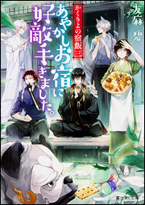
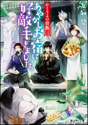

「大井の帝王」的場文男、還暦のトップジョッキー７０００勝の軌跡
還暦を過ぎても、公営競馬・大井競馬のトップジョッキーとして活躍している騎手がいる。その名は的場文男。派手な騎乗スタイルと持ち前のド根性で「大井の帝王」と言われる。他の競技を見渡しても、６０歳を過ぎて第一線で活躍しているアスリートはいない。これまで、馬に顔を蹴られて前歯が吹っ飛んだり（すべてインプラントに）、腹を蹴られて脾臓と腎臓が二つに割れたりする大怪我を負いながら、競馬界のレジェンド・的場が積み上げた勝ち星は歴代２位。競馬界トップの佐々木竹見騎手（引退）の７１５１勝が射程圏に入っている。大井競馬において通算21回のリーディングジョッキーとなり、Ｇ１勝ちも多い的場だが、４３年の騎手生活でまだ勝っていないのがダービーである。２０１６年まで東京ダービーに３５回挑戦して、２着は９回あるもののいまだに勝利しておらず、「大井の七不思議の一つ」とまで言われている。「いつまで乗れるか、一年一年が勝負」と語る的場が、還暦の年に悲願のダービージョッキーとなれるのか。“生ける伝説”的場文男の60年の波乱万丈の騎手人生、生きざまをまとめた1冊。ＪＲＡ最多勝利ジョッキーの武豊も「的場さんは、ぼくの尊敬する素晴らしい騎手です」と大絶賛！
巻頭カラー 的場文男60年の軌跡
ＰＡＲＴ１ 騎手・的場文男
ＰＡＲＴ２ 東京ダービー
ＰＡＲＴ３ 記憶に強く残る馬
ＰＡＲＴ４ 南関東４場の戦術
ＰＡＲＴ５ 調教、騎乗スタイル、怪我
ＰＡＲＴ６ 人間・的場文男
データファイル（60年の歩み、７０００勝までの道のり、重賞勝利一覧、年別勝利数・収得賞金）
もくじ
巻頭カラー 的場文男60年の軌跡
ＰＡＲＴ１ 騎手・的場文男
ＰＡＲＴ２ 東京ダービー
ＰＡＲＴ３ 記憶に強く残る馬
ＰＡＲＴ４ 南関東４場の戦術
ＰＡＲＴ５ 調教、騎乗スタイル、怪我
ＰＡＲＴ６ 人間・的場文男
データファイル（60年の歩み、７０００勝までの道のり、重賞勝利一覧、年別勝利数・収得賞金）


 
